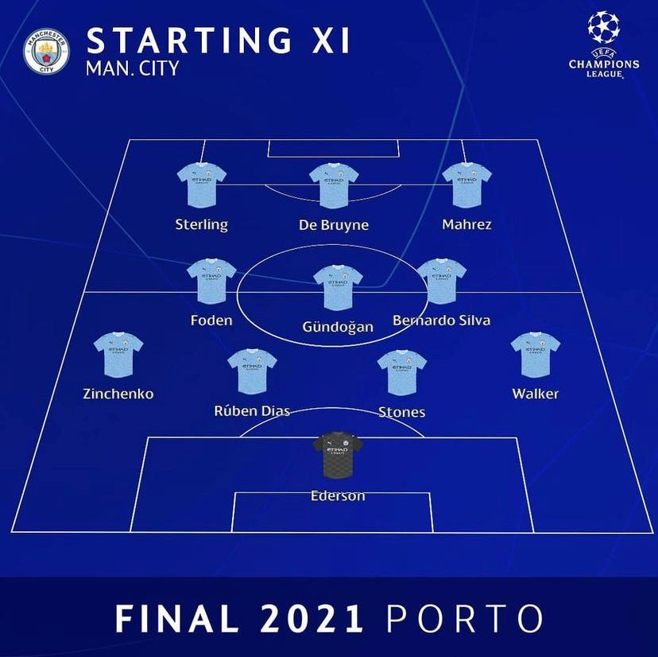
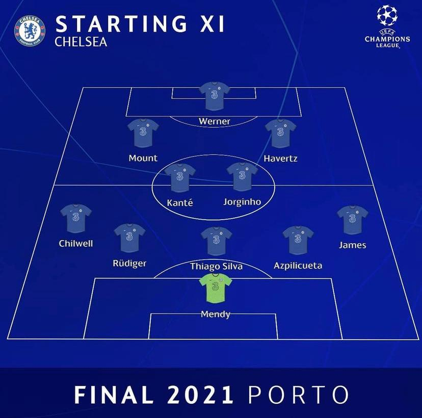

A Liga dos Campeões da UEFA de 2020–21 foi a 66ª edição da Liga dos Campeões da UEFA, a maior competição de clubes europeus organizada pela UEFA. A final foi disputada no Estádio do Dragão, no Porto, Portugal. O estádio que foi originalmente escolhido para receber a Final da Liga dos Campeões seria Estádio Olímpico Atatürk, porém ele foi alterado pela UEFA devido a pandemia de COVID-19 na Europa.
Com uma final de times ingleses, a final se realizou no último sábado (29) e terminou com uma vitória de 1 a 0 do Chelsea sobre o Manchester City.
Com Thomas Tuchel sob seu comando "os blues" começaram um jogo disputado, até que aos 42 do primeiro tempo o time londrino conseguiu marcar o gol da vitória com Havertz.
clique na imagem e veja o gol
No encontro de duas das melhores defesas do mundo, o Chelsea foi mais completo. Guardiola optou por deixar Rodri e Fernandinho no banco e escalar Sterling. Mas quase não ameaçou o gol de Mendy. Os Blues de Londres fizeram um grande primeiro tempo no ataque e deram aula defensiva na segunda etapa. Com transição rápida, Werner assustou em duas boas chegadas na frente, uma delas defendida por Ederson. A equipe de Guardiola fechou a segunda etapa com quase 68% de posse de bola, mas sem efetividade. Foram 11 cruzamentos na área e apenas quatro finalizações no segundo tempo, sem sucesso. Sem acertar o gol de Mendy. A melhor chance nos 45 minutos finais foi do campeão. Aos 27, Havertz acionou Pulisic em velocidade pela direita, mas o norte-americano finalizou para fora. Agüero e Gabriel Jesus ainda entraram em campo, mas não conseguiram penetrar na área do Chelsea. Nem com sete minutos de acréscimos. A Orelhuda foi para Londres.
confira a baixo as escalações iniciais
|  |  |